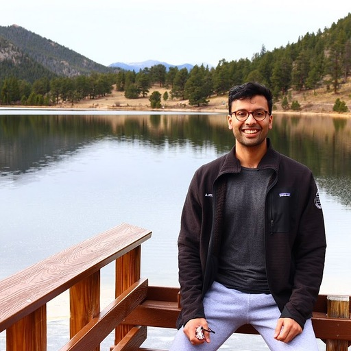

AI safety · human–AI alignment
Siddharth Gadepalli
Currently Member of Technical Staff at Zillow · AI science and engineering
Building safer AI systems at the intersection of theory and practice — reward hacking, evaluation, and keeping humans in control.
Previously: FanDuel · Khan Academy · Atlassian · Accenture
About
I am a Georgia Tech triple-degree graduate and machine learning engineer preparing for a PhD in AI safety. My path has been multidisciplinary by design — biomedical engineering, mechanical systems, and computer science — shaped by a habit of noticing bottlenecks, teaching myself what is missing, and staying with hard problems until something durable exists.
Alongside industry work, I do independent research on AI Safety
Research
- Reward hacking & probe-based detection Studying activation and policy obfuscation under RL-style fine-tuning. Designing probes and honeypot environments to detect when models hack rewards — and when those defenses can be bypassed.
- Evaluation for specialized / agentic AI Building evaluation systems that measure factuality, safety, and human alignment for tool-using AI applications in high-stakes settings.
- Earlier research foundations Undergraduate biomedical imaging research with a peer-reviewed publication and research award; thermal failure modeling for a university satellite program.
Experience
About a decade building software, data, and ML systems end to end — from classical machine learning to modern agentic AI.
- Traditional ML and recommender systems in production at scale
- Agentic AI applications that mix deterministic tools with LLM reasoning
- AI evaluation platforms: benchmarks, LLM-as-judge, monitoring, and hill-climbing
- Safety and alignment checks for deployed generative systems
- Data infrastructure and software engineering foundations
- Technical leadership and mentoring across engineering teams
Education
- M.S. Computer Science (AI / ML) Georgia Tech · completed while working full time
- M.S. Mechanical Engineering Georgia Tech
- B.S. Biomedical Engineering Georgia Tech · research publication · undergraduate research award
Blog
Notes on AI safety, research, and building reliable systems. Read the blog →